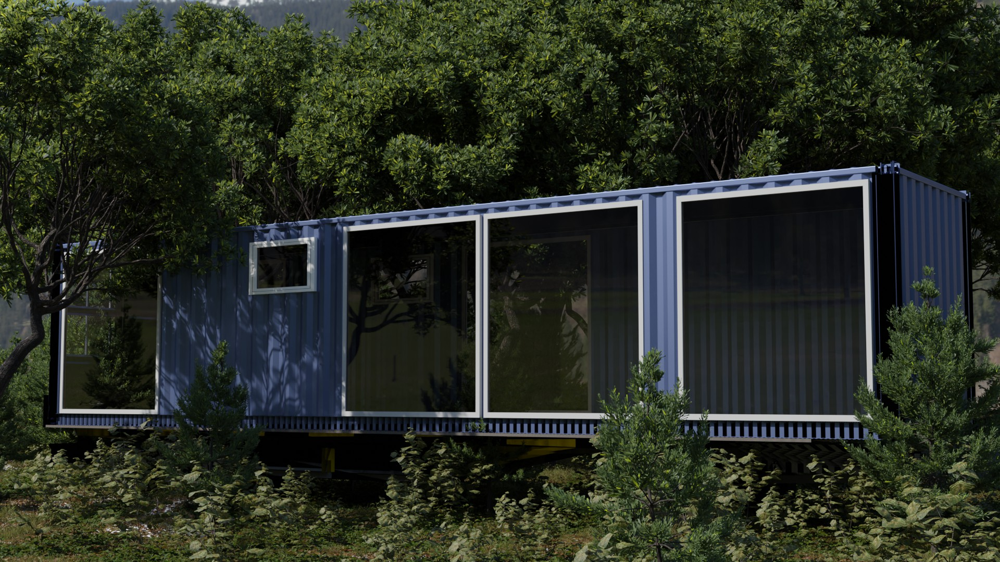
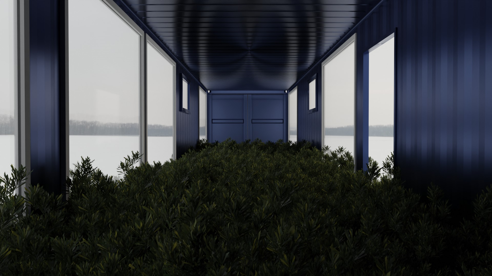
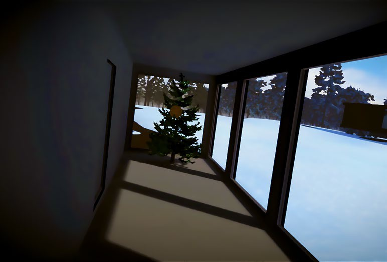
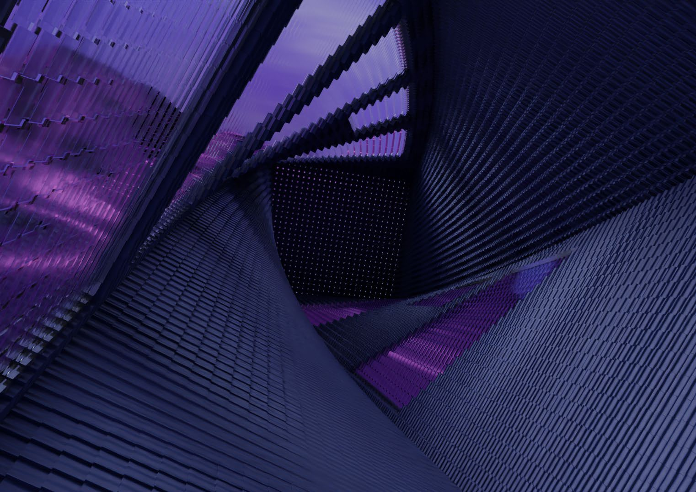
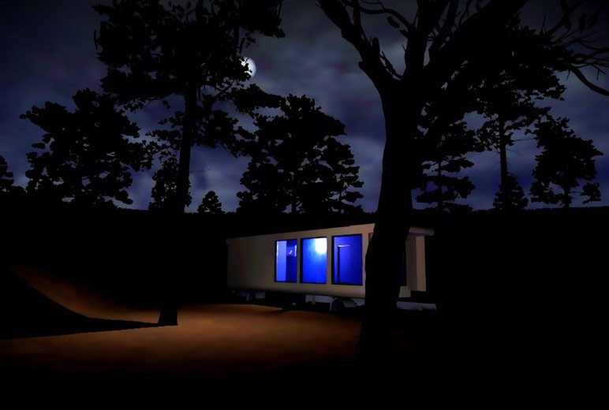

02 / 2023 / Instalación de realidad virtual para sitio específico
Transit
Adentro, afuera, en otro lugar
Manuel Eguía / Mauro Zannoli

Un viaje virtual comienza en una réplica exacta de la sala que ocupa el participante. El espacio familiar se abre gradualmente a interiores imposibles y paisajes transformados.
Concebimos Transit como una serie de experiencias de realidad virtual para sitio específico. Cada episodio parte del entorno físico inmediato, desdibujando el pasaje al mundo virtual. La arquitectura, el paisaje y las referencias culturales locales se convierten en materia de la obra.
El primer episodio transcurre en iM Konsthall, una galería móvil construida dentro de un contenedor de transporte. Su interior se multiplica y transforma mediante una secuencia de pliegues espaciales, hasta situar al participante afuera, en el bosque del norte de Suecia durante la noche, buscando el camino de regreso.
Devolver el espacio virtual a un lugar
El contenedor es a la vez sede física e imagen del tránsito. Sus ventanas enmarcan inicialmente el mismo paisaje que se veía antes de colocarse el casco. Esa continuidad proporciona el anclaje perceptivo del que parte la instalación.
El recorrido regresa al punto de partida y pone la sala conocida en relación con los espacios alterados que se atravesaron durante el viaje.



